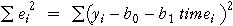

Forecasting
Moving averages provide a good description of the trend in a time series. However a common goal in time series analysis is to forecast values of the time series in the future. For example, accurate forecasting of the demand for a product allows production capacity to be adjusted in time to meet changes to the demand.
Moving averages cannot smooth the end values of the series and do not provide a method to extend the trend into the future. The best that can be done is to extend the trend 'by eye' — hardly an objective forecasting method!
Least squares
An alternative is to describe the trend with a mathematical equation which models the trend as a function of time,
trend = function ( time )
where the function usually involves some constants (parameters) that can be adjusted to improve the fit of the model. The simplest such model is a linear model of the form
trend = b0 + b1 time
This model has the same form as the linear models that were used in the regression chapter of this e-book and the statistical methods from that chapter can be used to fit and analyse the model. In particular, the residuals are the differences between the actual time series values, y, and the model's predictions,
ei = yi − trendi
and the two model parameters are estimated by least squares to minimise the sum of squares of residuals,

World rice production
The time series below shows the total world rice production (million tonnes) between 1961 and 2001. There is a clearly increasing trend to these figures. By estimating this underlying trend, we might hope to predict future production.
Drag the arrows at the two ends of the line to position it close to the data. (Clicking the checkbox Show residuals displays the residuals as blue lines. The aim is to reduce the size of these residuals.)
Click Least squares to position the line to minimise the residual sum of squares.
The equation of the trend line is shown under the graph. The coefficient of 'Year' represents the annual rate of growth in rice production, which the linear model assumes to be constant. The least squares line can be used to predict rice production into the future.
Recoding the years
When fitting models to annual data, as in the Rice example above, using the year as an explanatory variable can result in very large coefficients. For model-fitting purposes, it is better to recode the years so that some year within the range of the data is coded as year 0. (Recoding the years in this way is particularly important for fitting the quadratic models that are described on the next page.)
In other words, it is better to fit a model such as
trend = b0 + b1 (time − 1960)
This model is equivalent to the corresponding model that uses the raw years — when fitted by least squares, both models give the same fitted values and forecasts, even though b0 is different.
Monthly or quarterly data
Recoding is even more important for monthly or quarterly data. For quarterly data, it would be possible to code successive months as:
| Month | "Time" | Value |
|---|---|---|
| Jan 1992 | 1992 | 105,500 |
| Feb 1992 | 1992 1/12 | 109,000 |
| Mar 1992 | 1992 2/12 | 110,500 |
| Apr 1993 | 1992 3/12 | 110,000 |
| ... | ... | ... |
but this is very unnatural. It is easier to simply recode the months sequentially as 0, 1, 2, etc, even though this does mean that a little thought is required to match recoded times to months.
| Month | Recoded time | Value |
|---|---|---|
| Jan 1992 | 0 | 105,500 |
| Feb 1992 | 1 | 109,000 |
| Mar 1992 | 2 | 110,500 |
| Apr 1993 | 3 | 110,000 |
| ... | ... | ... |
Residential property sale prices in New Zealand
The diagram below shows median monthly house prices for houses sold in New Zealand from January 1992 (coded 0) to October 2010 (coded 225).
The labels on the horizontal axis are not very reader-friendly and should not be used for presentation purposes, but they are useful here to illustrate the use of least squares to fit a trend line. Click the Least squares button to display the least squares line that describes the best linear trend for these data.
In this data set, the least squares line does not fully describe the upward movement of house prices. There has been cyclical movement in house prices on top of the general upward trend. Note also that:
78 + 1.22 × 110 = 212.2 thousand dollars